Kelimelerin Dünyasında Bir Yolculuk
Kitap alıntılarından oluşan bir koleksiyon. Edebiyatın derinliklerine dalıyoruz.


Edebiyatın İncileri
Kitap alıntıları ve edebi sözlerin evi. En iyi kitaplardan gelen en güzel alıntıların sahipleri.
Stefan Zweig
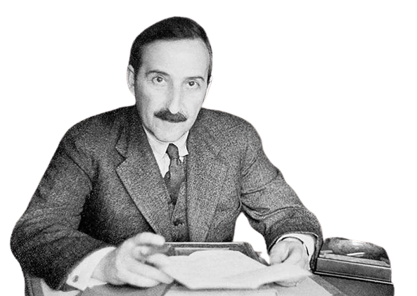
Sen, beni asla, asla tanımayan, bir su birikintisinin yanından geçercesine yanımdan geçip giden, bir taşa basarcasına üstüme basan, hep, ama hep yoluna devam eden ve beni sonsuz bir bekleyiş içerisinde bırakan sen, kimsin ki benim için?
Bilinmeyen Bir Kadının Mektubu
Anton Çehov
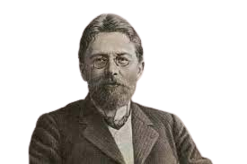
Sakın bana sevmeyi bilmediğimi söylemeyin. Üzüntüyü, hüznü, yağ gibi erimeyi, Aşk nedir, demeyin bana!
Nedir özlemin ağrısı, nedir hüzün, nedir yağ gibi erimek, zavallılaşmak ? Ben de cayır cayır yandım bir zamanlar.
Tütünün Zararları
Nazım Himet
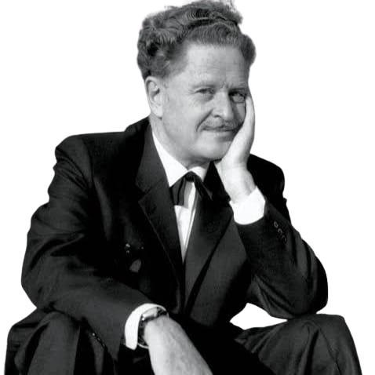
Muhakkak bir gün seninle ben aynı anda birbirimizi düşüneceğiz,
yeter ki sen ömrünün herhangi bir saniyesinde de olsa beni
düşün.
Piraye'ye Mektuplar
Doğan Cüceloğlu
“İnsan bir şeyi yapmaya karar verdi mi, sonuna kadar gitmeli; yaptığı şeyden sorumluluk almalı. Ne yaparsa yapsın, önce niçin onu yaptığını bilmeli, ve daha sonra yaptıklarını hiç kuşkulanmadan, çekinmeden, bütün gücünü vererek yapmalı. “
Savaşçı
Maksim Gorki
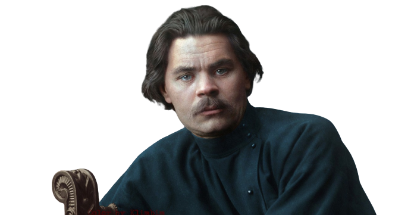
Kendi kendinin patronu olmayı öğren, kimsenin etkisi altında kalma! Sessiz... sakin... ama inatla yaşa! Herkesi dinle, ama senin için en iyisi neyse, onu yap..."
Çocukluğum
Cemal Süreya

''Evleniriz belki bir gün..
Çocuklarımız olur;
Bana benzer şair olur,
Sana benzer şiir olur..''
Sevda Sözleri
Artur Conan Doyle
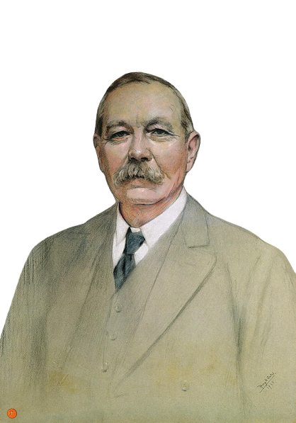
Beynim her zaman kalbime hükmettiği için kadınlara çok kapılmamışımdır ama şimdi kızın kusursuz yüz hatlarından, yaylaların yumuşak tazeliğinin hayat kattığı teninden ben bile gözlerimi alamıyordum.
Sherlock Holmes - Aklın Şüphesi Suçun Gerçeğidir
Ahmed Arif
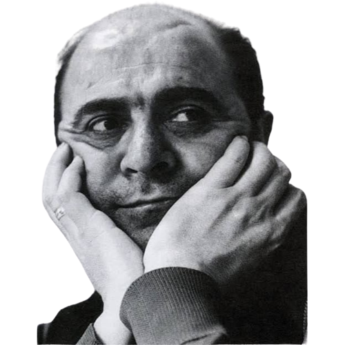
Rüya, bütün çektiğimiz. Rüya kahrım, rüya zindan.
Nasıl da
yılları buldu, Bir mısra boyu maceram...
Bilmezler nasıl aradık
birbirimizi,
Bilmezler nasıl sevdik, iki yitik hasret, İki parça
can.
Suskun
Can Yücel
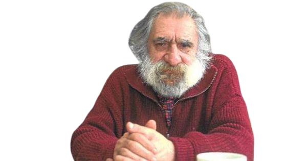
Öyle parçalandım ki ömrümde
Sevgiyle öfke arasında,
Sevgimi öfke vurdu
Öfkemi sevgi kaçırdı
İçim parçalandı arada.
Sevgi Duvarı
Reşat Nuri Gültekin
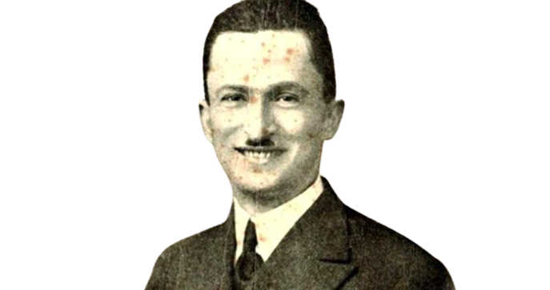
Sevecek bir hakiki insan bulanlara şaşmak lazım... Çünkü onun bir hayalini bile bulmak o kadar güç, o kadar güç ki...
Çalıkuşu
Orhan Veli Kanık
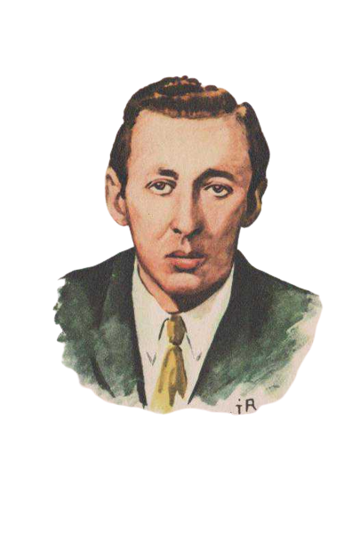
Bilmezdim şarkılarım bu kadar güzel,
Kelimelerinse kifayetsiz olduğunu
Bu derde düşmeden önce.
Bütün Şiirleri
Mehmed Uzun
Bir düşteymiş gibi kesik kesik konuşan kızın son sözleri karşısında tutamıyorum kendimi,
"Bak kar yağıyor," diyorum,
"Karın güzelliğine baksana..."
Aşk Gibi Aydınlık Ölüm Gibi Karanlık
Murathan Mungan
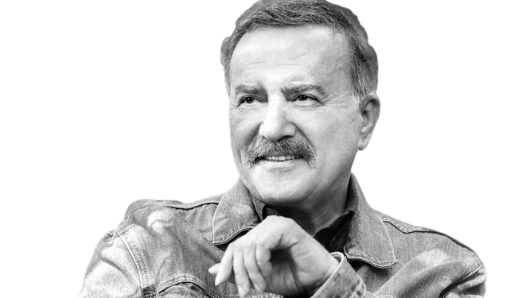
Zamanla yerleşir yaşadıkların, yeniden konumlanır, çoğalır anlamları, önemi kavranır. Bir zamanlar anlamadan yaşadığın şey, çok sonradan değerini kazanır. Yokluğu derin ve sürekli bir sızı halini alır.
Yaz Geçer
George Orwell
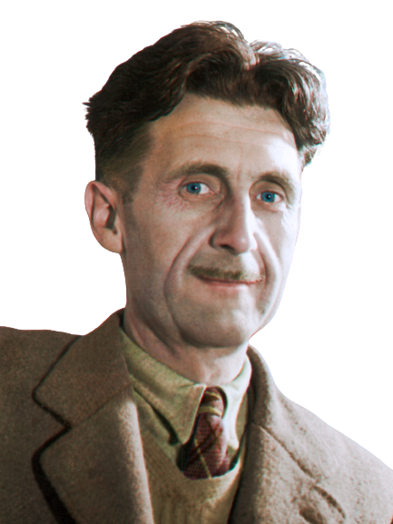
İnsan üretmeden tüketen tek yaratıktır. Süt vermez, yumurta yumurtlamaz, sabanı çekecek gücü yoktur, tavşan yakalayacak kadar hızlı koşamaz. Gene de tüm hayvanların efendisidir.
Hayvan Çiftliği
Marlo Morgan
Tanrım, bana değiştiremeyeceğim şeyleri kabul etme gücü, değiştirebileceğim şeyleri değiştirme cesareti ve bu ikisi arasındaki farkı anlayabilme sağduyusu ver.
Bir Çift Yürek
Hikmet Anıl Öztekin
Aslında O hep var da biz onu ancak en yalnız halimizle görebiliyoruz. Ancak aciz hissettiğimizde hatırlıyoruz. Bu sefer de güçleniyorsun. Çünkü öyle bir şey var ki yanında, öyle bir güç var ki... Biraz hüzünlensen, biraz dertlensen tutuyor elinden.
Eyvallah 1
Alexander Dumas
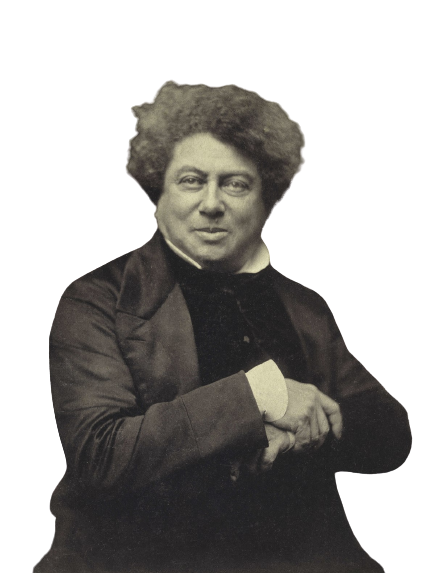
"Tanrım, bunun açıklaması çok basit; iktidarı elinde tutan sizlerin elinde sadece paranın sağladığı olanaklar var; oysa iktidarı hedefleyen bizlerin elinde bağlılığın araçları var."
Monte Cristo Kontu (2 Cilt Takım)
Stephan King
Baştan sona kadar iyi geçen günler zaten azdır. Belki de bir insanın yaşamındaki gerçekten iyi günlerin toplamı bir ay bile değildir.
Hayvan Mezarlığı
Frida Kahlo
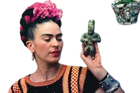
Bir dik duruşun;
kaç yenilgi, kaç gözyaşı,
kaç kalp ağrısı ettiğini bilemezsiniz...
Hissettiğin Kadar Yalnızsın
Ahmet Batman
Kavanoza hapsettiğin balığı, kafese hapsettiğin kuşu sevdiğini sanıyorsun değil mi? Aslında onları değil sana ait oluşlarını seviyosun…Gerçek sevgi sahip olmadığına karşı gösterdiklerinde gizlidir
Beni İçinden Sev
Orhan Pamuk
Bir kadınla üç şey yapabilirsin:
Ya onu seversin, ya onun için acı çekersin ya da onu yazarsın.